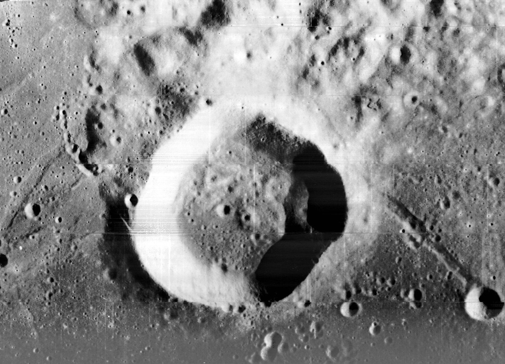
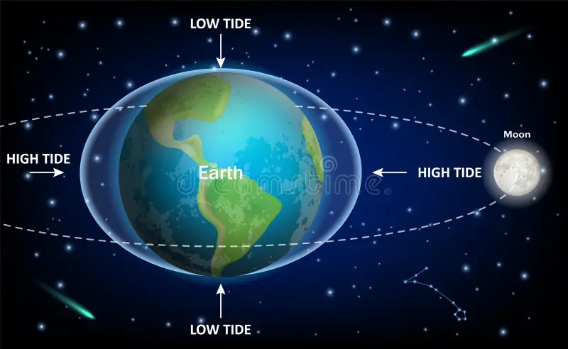

Moon

What is the Moon?
The Moon is Earth's only natural satellite. It is the fifth-largest natural satellite in the Solar System. It is located approximately 384,400 kilometers away from Earth.
Physical Characteristics
The environment on the Moon is vastly different from Earth:
- Atmosphere: The Moon has no significant atmosphere. Because of this, sound cannot travel (there is no medium for sound waves).
- Temperature: During the day, it heats up to 127°C, while at night, it becomes extremely cold, dropping to -173°C.
- Gravity: Its gravity is only about 1/6th of Earth's. (For example, if you weigh 60 kg on Earth, you would feel like you weigh only 10 kg on the Moon).
Motion and Appearance
The Moon rotates on its axis while also orbiting the Earth.
- Synchronous Rotation: The Moon takes the same amount of time to rotate once on its axis as it does to orbit the Earth (about 27.3 days). This is why we always see the same side of the Moon from Earth.

- Lunar Phases: Depending on how sunlight hits the Moon, the portion visible to us changes. This happens in a cycle from New Moon to Full Moon.

Surface Features
The Moon's surface consists mainly of two types of terrain:
- Lunar Highlands: Light-colored, mountainous regions filled with craters.

- Maria: Dark, flat plains formed by ancient volcanic eruptions (lava flows).

- Craters: These were formed by meteorite impacts over billions of years.

Importance of the Moon
The Moon is vital for life on Earth:
- Tides: The Moon's gravitational pull causes the rise and fall of ocean tides.

- Earth's Tilt: The Moon helps stabilize Earth's 23.5-degree axial tilt. This stability is the primary reason we have predictable seasons.

Lunar Exploration
The Moon is the most explored celestial body by humans.
- Apollo 11 (1969): Neil Armstrong and Buzz Aldrin became the first humans to set foot on the Moon.
.jpg)
- Modern Day: Currently, countries like the USA (Artemis), India (Chandrayaan), and China are launching major missions to search for water, especially at the Moon's South Pole.
If you found this information helpful, please use the link below to visit our YouTube channel. Subscribe and support us to help us continue creating more content like this.
- Infinity Thinkers Laboratory